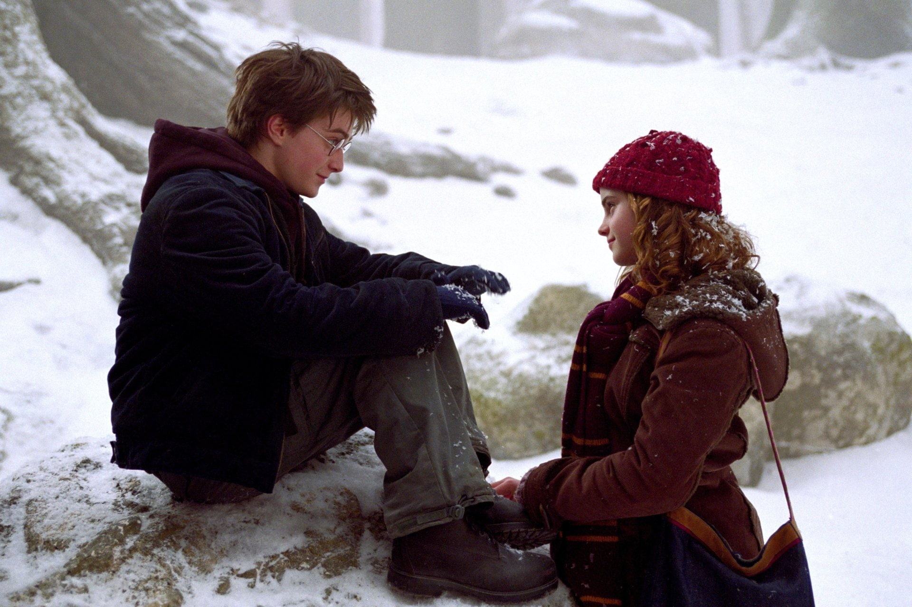
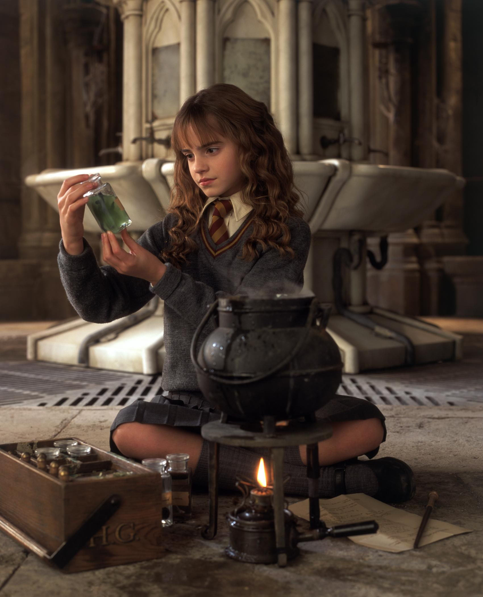
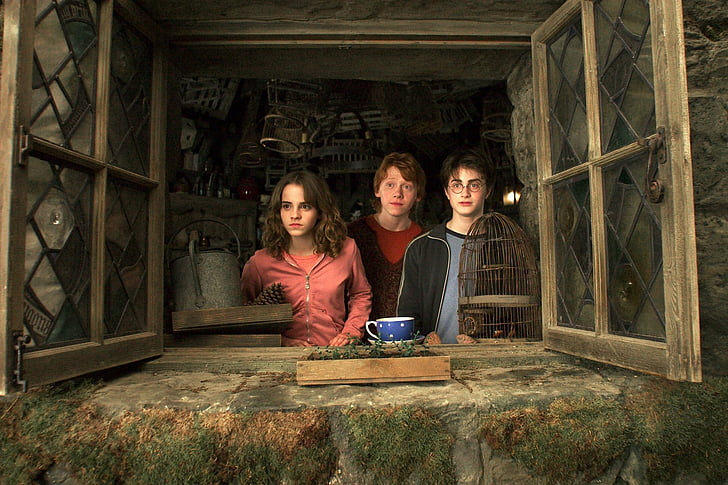

Funk
Soul Style
- Innovative binding ensures a truly flat Experience
- Funky degree as distinct as you
Doraemon is written and illustrated by Fujiko F. Fujio, the pen name of Japanese manga artist Hiroshi.According to Fujio, it was originally conceived following a series of three events: when
searching for ideas for a new manga, he wished a machine existed that would come up with ideas for him, he tripped over his daughter's toy, and heard cats fighting in his neighborhood.
Doraemon is mainly aimed at children, so Fujio chose to create the character with a simple graphic style, based on shapes such as circles and ellipses. He used the same sequences of cartoons with
regularity and continuity to enhance the reader's ease of understanding. In addition, blue, a characteristic color of Doraemon.
During Doraemon's development, Fujio did not express a change in characters; he said, "When a manga hero become a success, the manga suddenly stops being interesting. So the hero has to be
like the stripes on a barber pole; he seems to keep moving upward, but actually he stays in the same place."According to Zensho Ito, Fujio's former student, the "length" of time in the universe is one of the ideas that inspired Fujio to make Doraemon.Frequently occur in its stories is Nobita's desire to control time, and there exist time-control gadgets that he uses to satisfy that desire, particularly the "Time Machine", which lies in his desk drawer. Unlike Western works on science fiction, the manga did not explain the theory nor the applied technology behind these tools, but instead focusing on how the characters exploit their advantages, making it more children-friendly.
searching for ideas for a new manga, he wished a machine existed that would come up with ideas for him, he tripped over his daughter's toy, and heard cats fighting in his neighborhood.
Doraemon is mainly aimed at children, so Fujio chose to create the character with a simple graphic style, based on shapes such as circles and ellipses. He used the same sequences of cartoons with
regularity and continuity to enhance the reader's ease of understanding. In addition, blue, a characteristic color of Doraemon.
During Doraemon's development, Fujio did not express a change in characters; he said, "When a manga hero become a success, the manga suddenly stops being interesting. So the hero has to be
like the stripes on a barber pole; he seems to keep moving upward, but actually he stays in the same place."According to Zensho Ito, Fujio's former student, the "length" of time in the universe is one of the ideas that inspired Fujio to make Doraemon.Frequently occur in its stories is Nobita's desire to control time, and there exist time-control gadgets that he uses to satisfy that desire, particularly the "Time Machine", which lies in his desk drawer. Unlike Western works on science fiction, the manga did not explain the theory nor the applied technology behind these tools, but instead focusing on how the characters exploit their advantages, making it more children-friendly.
doraemon
There are still millions who only dream of school
ITC is helping some of them realize this dream
For every four classmate notebook you buy, ITC
contributes Re.1 to its rural development that
supports, among other projects, primary education
in villages. You can be truly proud that your contribution is part of it.
Let's put India first ___________________________
ITC Limited
Citizen
First



Classmate uses eco-friendly and
elemental chlorine free paper
elemental chlorine free paper
Scan with your
smartphone &
join us on
www.facebook.com/
classmate
smartphone &
join us on
www.facebook.com/
classmate
FEEDBACK?
SUGGESTIONS?
SUGGESTIONS?
Post:Quality Manager, ITC Ltd.- ESPB,
ITC Centre, 5th Floor,
760, Anna Salai, Chennai. 600 002.
Website: classmate@itc.in
Phone: 1800 425 3242(Toll Free From BSNL Lines)
ITC Centre, 5th Floor,
760, Anna Salai, Chennai. 600 002.
Website: classmate@itc.in
Phone: 1800 425 3242(Toll Free From BSNL Lines)
A Quality product marketed by
Exercise Book
72 Pages
Size:27.2 x 16.7 cm
_____________________________________
Type of Ruling:
72 Pages
Size:27.2 x 16.7 cm
_____________________________________
Type of Ruling:
Single Line